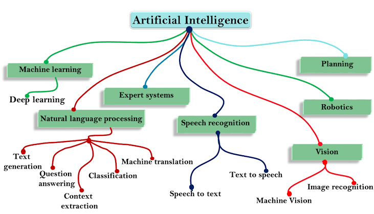
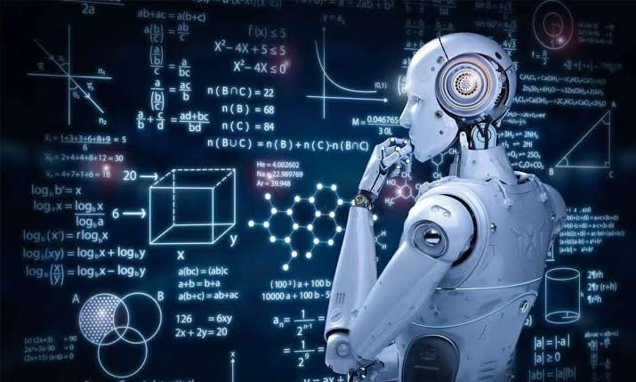

Hi... I am the creater of this app. In this app you can learn all the Knowledge related to AIDS. If you are studing collage you can use this app to grow your Knowledge.
Important Note ==> The 2023-27 button is only for AIDS dept... I have upload the most important question. Follow the Instruction... Follow the instruction..
Uses of this AIDS app
1. General Knowledge.
2. Improve your character.
3. How to study the concept.
4. Programming Language.
To understand or to study the full Artificial Intelligence and data Science, if you are unable to know where to start the first point. Here is my roadmap to study the AI.

Let see some of the basic information about AIDS....

First ofall....(Click below link to read full information about AIDS...)
===><===
I hope you all have read the above details... and understand a little about the Artificial Intelligence and Data Science. Now Let's start the chapter based on the lesson were you will learn the deepth of the AIDS... So, I am going to use the same method that i have studyed in collage.
Ok.. In the Collage the AIDS dept.... The 1st year 1st Sem is nothing but same as 12th grade subject, but only python only added.... so let's see about the PYTHON
Click the below link to learn full details about PYTHON
I have given the details based on chapters so that you can understand the concept. And it will very useful for 1st year student which is common for all branch.
In the first year 1st sem there will be normal as 12th subject like,, Tamil,Eng,Maths,Phy,Chem,python. In the 2nd sem only there will new subject that you have to study and you have to focus on it. but at first it will be confussed because it was same for me too. if you can do this you can do any thing in life.
*Pls wait for some time we will update the app, which will be available for all dept and all subject.
*In this section some of the notes have missed we will be updated in some times.
For that reason I have created this app, not only for collage student also for school student if you all are intersted you also can learn using our app. Now let see the 2nd sem
In second sem there will be 7 paper for AIDS dept.
1. Tamil
2. English
3. Maths
4. Physics
5. BEEE (Basic Electrical and Electronic Engineering)
6. EG (Engineering Graphics)
7. DS (Data Structure and design)
*From that 7 paper I have that important for BEEE,EG,Maths...
*In 1st sem Maths will be very easy it will based on the 12th, we will give information about 1st sem also.
Video section...
In this section, we will upload all the subject related and dept related video...like BEEE,DS,EG,M1,M2...